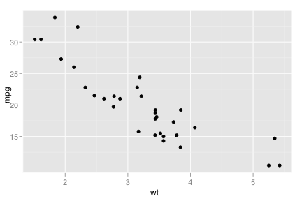
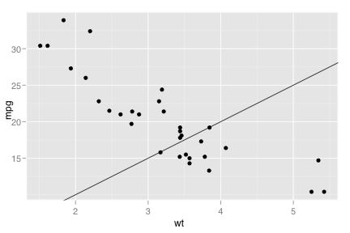
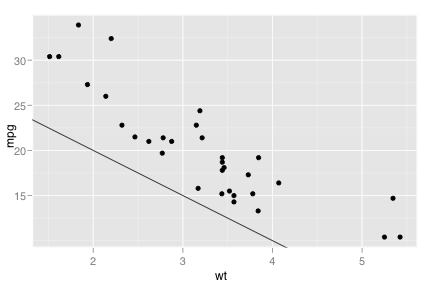
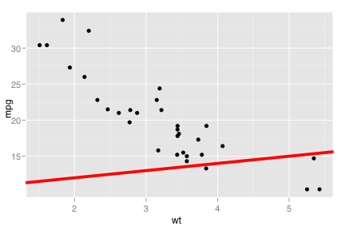
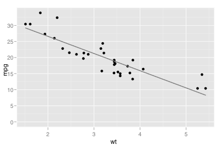
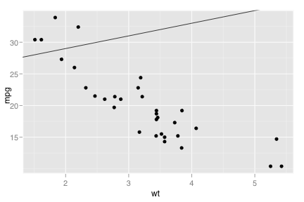
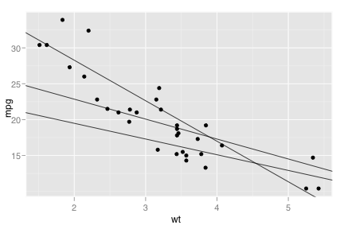
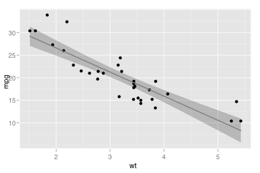

geom_abline
Line, specified by slope and intercept
Details
The abline geom adds a line with specified slope and intercept to the plot.
With its siblings geom_hline and geom_vline, it's useful useful for annotating plots. You can supply the parameters for geom_abline, intercept and slope, in two ways: either explicitly as fixed values, or stored in the data set. If you specify the fixed values (geom_abline(intercept=0, slope=1))) then the line will be the same in all panels, but if the intercept and slope are stored in the data, then can vary from panel to panel. See the examples for more ideas.
See layer and qplot for more information on creating a complete plot from multiple components.
Aesthetics
The following aesthetics can be used with geom_abline. They are listed along with their default value. All geoms and scales can also use the group aesthetic. Read how this important aesthetic works in scale_group. Typically, you will associate an aesthetic with a variable in your data set. To do this, you use the aes function: geom_abline(aes(x = var)). Scales control the details of the mapping between data and aesthetic properties; after each aesthetic are listed scales that can be used with that aesthetic. The scale documentation will also provide references to help you interpret the default values.
Instead of mapping an aesthetic to a variable in your dataset, you can also set it to a fixed value. See the parameters section for details.
colour:
black(scales: brewer, gradient, gradient2, hue, manual)size:
1(scales: area, manual, size, size_discrete)intercept:
0slope:
1
Parameters
When an aesthetic is used an a parameter, like geom_abline(colour = 3), it will override mappings from data.
colour, border coloursize, sizelinetype, line typeintercept, x/y interceptslope, slope of line
Default statistic
stat_identity. Override with the stat argument: geom_abline(stat="identity")
Default position
position_identity. Override with the position argument: geom_abline(position="jitter").
See also
- stat_smooth: To add lines derived from the data
- geom_hline: for horizontal lines
- geom_vline: for vertical lines
Examples
> p <- ggplot(mtcars, aes(x = wt, y=mpg)) + geom_point() > > # Fixed slopes and intercepts > p + geom_abline()  > p + geom_abline(slope=5)  > p + geom_abline(intercept=30, slope=-5)  > p + geom_abline(intercept=10, colour="red", size=5)  > p + stat_smooth(method="lm", se=FALSE)  > > # Slopes and intercepts as data > p <- ggplot(mtcars, aes(x = wt, y=mpg), . ~ cyl) + geom_point() > df <- data.frame(intercept=25, slope=2) > p + geom_abline(data=df)  > > # Slopes and intercepts from linear model > coefs <- do.call(rbind, by(mtcars, mtcars$cyl, function(df) {<- lm(mpg ~ wt, data=df)(cyl = df$cyl[1], intercept=coef(m)[1], slope=coef(m)[2])})) > str(coefs) > p + geom_abline(data=coefs)  > > # It's actually a bit easier to do this with stat_smooth > p + geom_smooth(method="lm")  > p + geom_smooth(method="lm", fullrange=TRUE) src "\n"